MIDORYIA IZUKI
Classe: 1ª A
Individualiade: One for All (um por todos)
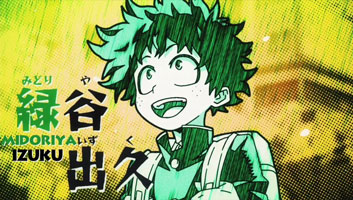Sobre: Mas conhecido como DEKU tem sua individualidade doada por All Might, que ela tem o poder de dar socos super sônicos, além de pular alto, concede super velociade e através do treinamento o corpo pode se fortificar. Izuki é bem tímido, anota todos as habilidades de heróis no seu caderno e sempre dar seu melhor para ser o herói numero 1.
BAKUGOU KATSUKI
Classe: 1ª A
Individualiade: Explosão
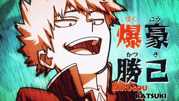Ele pode criar explosões de suas mãos através das glândulas humanas que ele tem e pode ser impulsionar para ficar mais rápido. O poder de suas explosões são muito fortes com seu traje de herói. Tem uma personaliade muito hóstil, é o tipo do cara que se irrita com qualquer coisa. Apesar de se esforçar muito pra ficar forte
DENKI KAMINARI
Classe: 1ª A
Individualiade: Eletrecidade
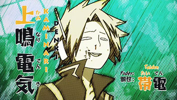EIJIRO KIRISHIMA
Classe: 1ª A
Individualiade: Fortalecimento
FUMIKAGE TOKOYAMI
Classe: 1ª A
Individualiade:

HANTA SERO
Classe: 1ª A
Individualiade: Fita

IIDA TENYA
Classe: 1ª A
Individualiade: Velociadade
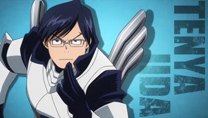KOJI KODA
Classe: 1ª A
Individualiade:
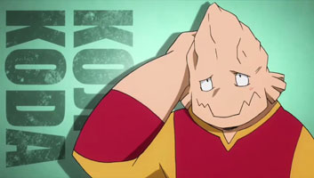KYOKA JIRO
Classe: 1ª A
Individualiade: Earphone Jack
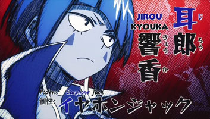MASHIRAO OJIRO
Classe: 1ª A
Individualiade:

MINA ASHIDO
Classe: 1ª A
Individualiade:
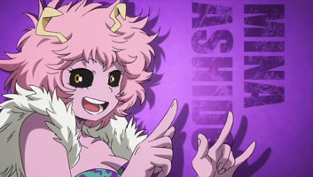MINORU MINETA
Classe: 1ª A
Individualiade:

OCHAKO URARAKA
Classe: 1ª A
Individualiade: Gravidade

RIKIDO SATO
Classe: 1ª A
Individualiade:
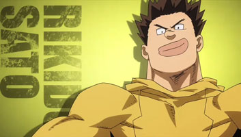SHOUJI MEZOU
Classe: 1ª A
Individualiade: Transformação
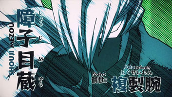TODOROKI SHOTO
Classe: 1ª A
Individualiade: Meio gelo e Meio fogo
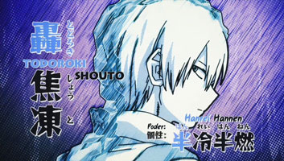TORU HAGURAKE
Classe: 1ª A
Individualiade: Invisibiliadade
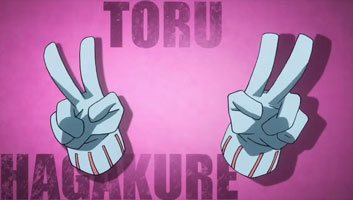TSUYU ASUI
Classe: 1ª A
Individualiade:

YAOYOROZU MOMO
Classe: 1ª A
Individualiade: Criação

YUGA AOYAMA
Classe: 1ª A
Individualiade: